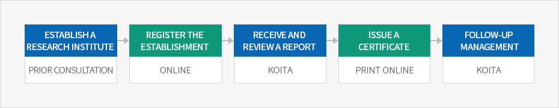

Business-Affiliated Research Institutes, etc.
- Home
- Incentives
- R&D Center
- Business-Affiliated Research Institutes, etc.
Business-affiliated research institutes or R&D departments that meet certain qualifications may apply and register to the Korea Industrial Technology Association to receive various types of support for their research and development activities.
※ Current status: 40,693 business-affiliated research institutes, 27,787 R&D departments (as of September 2019)
※ Related laws: Article 14.2 of the Basic Research Promotion and Technology Development Support Act, Article 16.2 of the Enforcement Decree of the Act
※ Related laws: Article 14.2 of the Basic Research Promotion and Technology Development Support Act, Article 16.2 of the Enforcement Decree of the Act
Notification
After the establishment of a business-affiliated research institute or department, applicants must submit the required documents and notify the Korea Industrial Technology Association. Notification is only available online.
Procedures



- Processing period : Processing is completed within seven days from the date of application. Time taken by applicants to correct incomplete applications and submit missing documents is not included in the processing period.
- establish a research institute - prior consultation
- register the establishment - online
- receive and review a report - koita
- issue a certificate - print online
- follow-up management - koita
Contact
(application for business-affiliated research institutes or departments): KOITA Research Institute Approval Team +82-2-3460-9141~46, 9013~17
Requirements for Approval
Business-affiliated research institutes or R&D departments must satisfy both HR and physical requirements to qualify.
| category | requirements to report | ||
|---|---|---|---|
| human requirements | business-affiliated research institutes | start-ups | 2 or more researchers solely responsible for research |
| smes ectablished by researchers | |||
| small-sized companies | 3 or more researchers solely responsible for research(2 researchers for companies 3 years old or older) | ||
| medium-sized companies | 5 or more researchers solely responsible for research | ||
| corporate research institute located out of korea(overseas research institute) | |||
| middle-standing companies | 7 or more researchers solely responsible for research | ||
| conglomerates | 10 or more researchers solely responsible for research | ||
| departments solely responsible for R&D | applied regardless of company size | 1 or more researchers solely responsible for research | |
| physical requirements | required research facilities and space | independent research space and facilities essential for R&D activities | |

Support Provided
Companies that have registered business-affiliated research institutes or R&D departments are eligible for various types of support, such as taxation, customs, employment, funds, sales channels, and technology.
Tax and Customs Support
| Support | Related Law | |
|---|---|---|
| Tax deductions for research and HR development expenses | General research | Article 10 of the Restriction of Special Taxation Act (Attached Table No. 6) |
| New growth engines | Article 10 of the Restriction of Special Taxation Act (Attached Table No. 7) | |
| Tax deductions for R&D and HR development and facility investment | Article 25 of the Restriction of Special Taxation Act | |
| Local tax deductions for real estate to be used as business-affiliated research institutes | Article 46.1 of the Restriction of Special Local Taxation Act | |
| Special taxation for technology transfer and leasing, etc. | Article 12 of the Restriction of Special Taxation Act | |
| Income tax reductions or exemptions for foreign engineers | Article 18 of the Restriction of Special Taxation Act | |
| Special taxation for R&D-related contributions, etc. | Article 10.2 of the Restriction of Special Taxation Act | |
| Corporate tax reductions or exemptions for high-tech companies in special R&D zones | Article 12.2 of the Restriction of Special Taxation Act | |
| No income tax for research activities of researchers | Article 12.12.3 of the Enforcement Decree of the Income Tax Act | |
| Customs reductions or exemptions for industrial technology R&D goods | Article 90.1.4 of the Customs Act | |
Financial Support
| Responsible Authority | Content | 관Information |
|---|---|---|
| Ministry of Science and ICT | Technology development |
|
| Ministry of Trade, Industry and Energy | Core industrial technology development, etc. |
|
| Ministry of SMEs and Startups | New product technology development, etc. |
|
Employment Support
| Support Provided | Content | Contact |
|---|---|---|
| Researcher system | Alternative military service | KOITA 02-3460-9124 |
| Researcher support system for SMEs (employment, dispatch) | Support for labor costs when employing researchers | KOITA 02-3460-9082 |
| Core researcher system for middle market enterprises | Support for labor costs when employing researchers | KIAT 02-6009-35122 |
| Youth Tomorrow Deduction | Support for young adults’ savings | Ministry of SMEs and Startups 1357 |
| ICT academic credit project internship | Support for internship program costs | Federation of Korean Information Industries 02-2132-0726 |
| Capacity-building project for industrial experts | Support for expert development costs | KIAT 02-6009-4375 |
| Invitation project of high-level overseas scientists (Brain Pool) | Support for invitation and research costs | National Research Foundation of Korea 042-869-6377 |
| Letter of employment recommendation system (Gold Card) | Employment recommendation for overseas technical talent | KOTRA 02-3460-7338 |
| Subsidy for additional employment of youth | Support for employment subsidies | Ministry of Employment and Labor 1350 |
| Recruitment center for science and engineering experts | Connect science and engineering experts with work in the field | KOITA 02-3460-9033 |
Technical Support
| Responsible Agency | Content | Information |
|---|---|---|
| Ministry of Trade, Industry and Energy | Reliability voucher program (support for material development) | www.신뢰성바우처.org |
| Ministry of Science and ICT | K-Global project | k-global@nipa.kr www.nipa.kr |
| Industry-Academic-Research institute cooperative cluster | www.koita.or.kr | |
| Follow-up R&D project of joint research institute of academic-research institute | ||
| Ministry of SMEs and Startups | Consulting service for SMEs | www.smbacon.go.kr |
| Support for acquisition of overseas standard certification | www.exportcenter.go.kr | |
| Korea Intellectual Property Office | Support for IP-R&D strategies | http://biz.kista.re.kr/ippro |
| Support for evaluation of patent technology and commercialization | www.kipa.org |